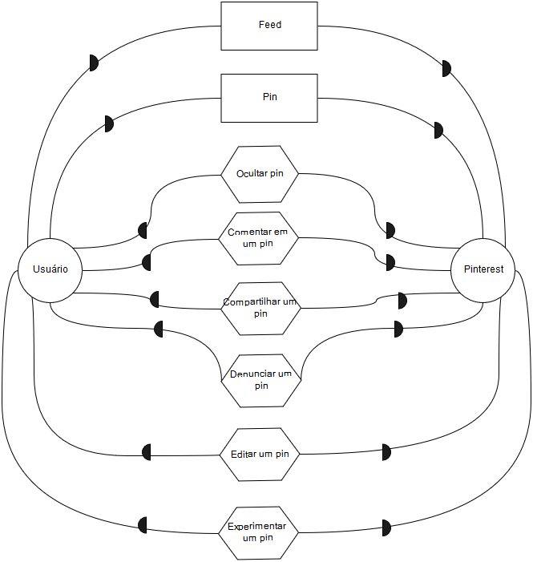
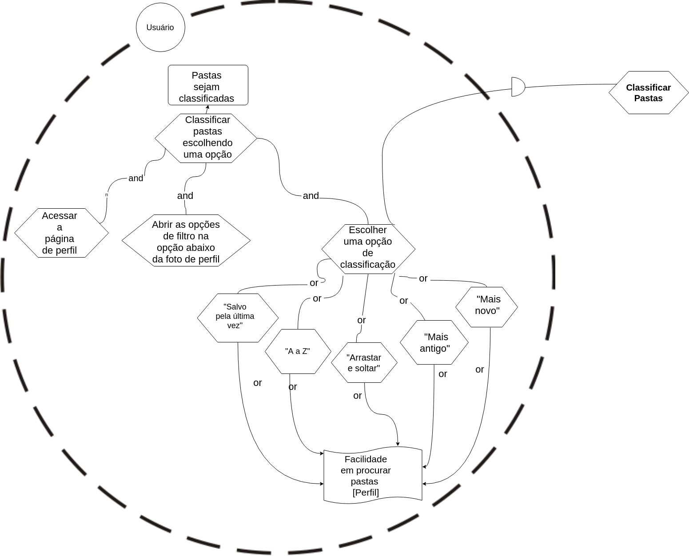
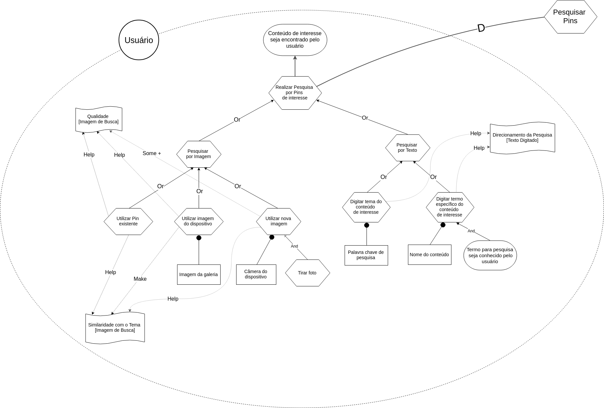
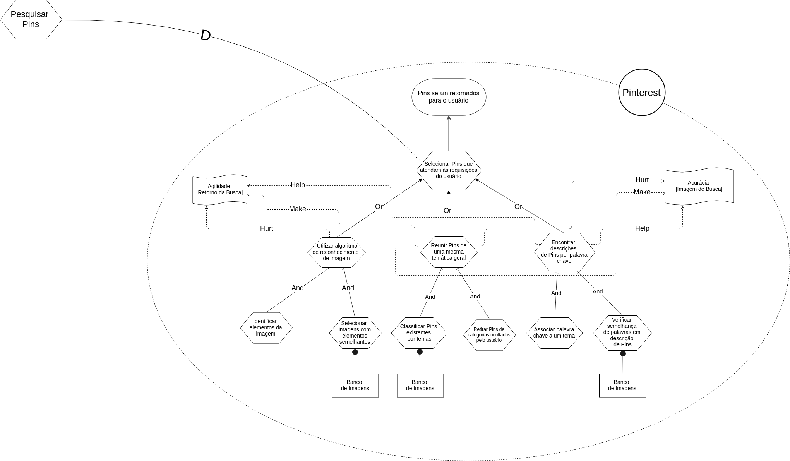

Versionamento
| Versão | Data | Modificação | Autor |
|---|---|---|---|
| 1.0 | 23/10/2018 | Adição da primeira versão do IS1 | Geovana Ramos |
| 1.1 | 23/10/2018 | Adição da primeira versão do diagrama de dependências SD1.1 com foco no pin | Geovana Ramos |
| 1.2 | 24/10/2018 | Adição da primeira versão do diagrama de dependências SD1.2 com foco nas pastas | Gabriela Medeiros |
| 1.3 | 24/10/2018 | Adição da primeira versão do IS2 | Letícia Meneses |
| 1.4 | 24/10/2018 | Adição da primeira versão do IS4 | Guilherme Guy |
| 1.5 | 24/10/2018 | Adição da primeira versão do IS3 | Alexandre Miguel |
| 1.6 | 24/10/2018 | Adição da primeira versão dos IS7 e IS8 mesclados no mesmo diagrama | Daniel Maike |
| 2.0 | 26/10/2018 | Adição da segunda versão do IS4 | Guilherme Guy |
| 2.1 | 27/10/2018 | Adição da primeira versão do diagrama de dependências SD2.1 com foco nas pastas | Gabriela Medeiros |
| 2.2 | 28/10/2018 | Adição da primeira versão do IS5 | Joberth Rogers |
| 3.0 | 29/10/2018 | Adição da terceira versão do IS4 | Guilherme Guy |
| 3.1 | 29/10/2018 | Adição da segunda versão do IS2 | Letícia Meneses |
| 3.2 | 29/10/2018 | Adição da segunda versão dos IS7 e IS8, já separados e com softgoals | Daniel Maike |
| 3.3 | 29/10/2018 | Adição do IS9 tendo o contexto de enviar pin com o pinterest como ator | Daniel Maike |
| 3.4 | 29/10/2018 | Adição da segunda versão do IS3 | Alexandre Miguel |
| 3.5 | 02/11/2018 | Adição do IS10 tendo uma análise mais ampla do pinterest como ator | Geovana Ramos e Joberth Rogers |
| 3.6 | 15/11/2018 | Adição do IS11 analisando o retorno de pesquisas na aplicação tendo o pinterest como ator | Alexandre Miguel |
| 3.7 | 15/11/2018 | Adição da terceira versão do IS3 | Alexandre Miguel |
Strategic Dependency Models
Versão 1.0
SD1.1 - Pin

SD1.2 - Pastas

Versão 2.0
SD2.1 - Pastas

Versão 3.0
SD3.0 - Geral

Strategic Rationale Models
IS1 - Definir interesses
Versão 1.0

Versão 2.0

IS2 - Classificar pastas
Versão 1.0

Versão 2.0

IS3 - Pesquisar Pins
Versão 1.0

Versão 2.0

Versão 3.0

IS4 - Seguir usuário
Versão 1.0

Versão 2.0

Versão 3.0

IS5 - Editar configurações de conta
Versão 1.0

Versão 2.0

IS6 - Cadastro no Pinterest

Enviar Pin
Versão 1.0

Versão 2.0
IS7 - Usuário

IS8 - Outro Usuário

IS9 - Enviar Pin

IS10 - Geral

IS11 - Retornar Pins
